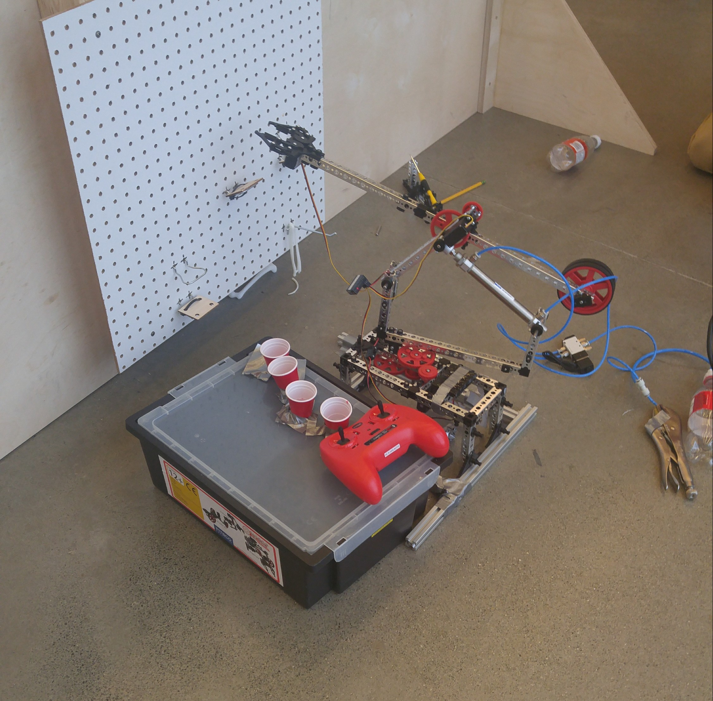

In the Mechatronics program at Waterloo, it is an annual tradition to host a "Tron Days" event for first year students where teams of 4 are put together and given a task to complete within roughly a span of 36 hours. In this iteration, our task was to contruct a robot arm which could pick up bones and place them in various orienatations and positions on a wooden board represenating a mock patient. Below, our robot arm is shown.
The mechanical pieces of the arm come from a Tetrix Robot Kit given to each group. After careful planning and modelling in AutoCad, we constructed our device using several gear systems to give the arm the ability to move freely both horizontally and vertically. A base was added to reinforce the structure and a servos was added to control the gears. Using a transmitter and receiver, I was able to control the movement of the arm and partake in a competition measuring the accuracy, speed and durability of our design.